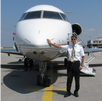
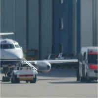
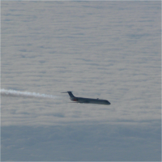
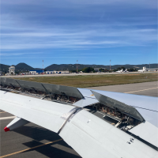

Hire a Freelance Pilot
|

|
|
Air Ambulance Flight Crew
|

|
|
| Need a reliable, highly qualified pilot on short
notice? Our freelance pilot services connect you with
experienced professionals ready to step into cockpit.
Whether you're covering vacation time, sudden absences, or
expanding your flight schedule, we provide seamless,
certified support. Every pilot in our network is vetted
for professionalism, safety, and business aviation
expertise. Stay flexible and flight-ready with on-demand
crew solutions. |
|
When lives are on the line, you need a crew you
can trust. Our air ambulance flight crews are specially
trained for medical missions, offering calm competence in
high-stress environments. We supply captains and co-pilots
with extensive medevac and patient transport experience.
Our teams are mission-ready 24/7 and fully compliant with
global and regional air ambulance regulations. Count on us
for skilled crews that deliver safety and compassion with
every flight. |
|
|
|
|
|
|
|
Aircraft Ferry Services
|

|
|
Maintenance Check Flights
|

|
|
| Relocating an aircraft doesn’t need to be
complicated. Our ferry flight crews specialize in safe,
efficient delivery of business jets worldwide. Whether
you're moving new acquisitions, repositioning for
maintenance, or responding to operational needs, we ensure
your aircraft gets where it needs to be. Trust us to fly
your asset like it’s our own. |
|
Post-maintenance test flights require technical
precision. Our pilots are certified and trained to perform
check flights after heavy inspections, avionics upgrades,
engine overhauls, and for ADG/RAT inflight tests. We
collaborate closely with your maintenance teams to verify
airworthiness, troubleshoot in-flight systems, and
document results. Safety, compliance, and clear reporting
are at the core of every mission. Put your aircraft back
into service with total confidence. |
|